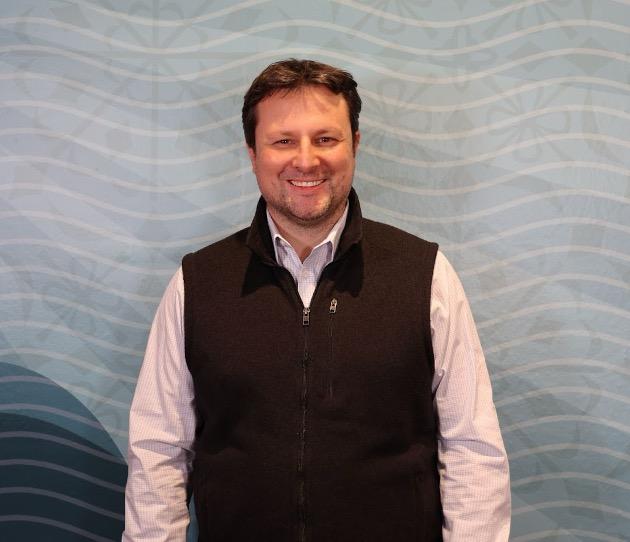

Keynotes
NebulaStream – Data Stream Processing for the Sensor-Edge-Cloud-Continuum
Speaker: Volker Markl (Technische Universität Berlin)
Keynote Session: Tuesday, May 5 | 8:30 - 9:30 AM
Room: Place du Canada
Abstract
Modern data-driven applications arising in such domains as smart manufacturing, healthcare, and the Internet of Things, pose new challenges to data processing systems. Traditional stream processing systems, such as Flink, Spark, and Kafka Streams are ill-suited to cope with the massive scale of distribution, the heterogeneous computing landscape, and requirements, such as timely processing and actuation. Classical approaches like managed runtimes, interpretation-based query processing, and the optimization of single queries that neglect interactions, greatly limit throughput, latency, energy-efficiency, and the general usability of these systems for emerging applications involving distributed data processing at scale in a sensor-edge-cloud-environment.
To overcome these limitations, we are researching and building NebulaStream, a novel open-source data stream processing system for massively distributed, heterogeneous environments. NebulaStream supports (potentially resource-constrained) heterogeneous devices, a hierarchical topology (with the distribution of computation and data flow in a cloud-edge-continuum), and the sharing of computations and data across multiple concurrent queries. This presentation discusses the design goals and core concepts of NebulaStream and and looks back at inspirations drawn from our prior work on Stratosphere and Apache Flink, among others.
Bio
Volker Markl is a German Professor of Computer Science. He leads the Chair of Database Systems and Information Management at TU Berlin and the Intelligent Analytics for Massive Data Research Department at DFKI. In addition, he is Director of the Berlin Institute for the Foundations of Learning and Data (BIFOLD). He is a database systems researcher, conducting research at the intersection of distributed systems, scalable data processing, and machine learning. Volker led the Stratosphere project, which resulted in the creation of Apache Flink. Volker has received numerous honors and prestigious awards, including best paper awards at ACM SIGMOD, VLDB, and ICDE as well as the ACM SIGMOD Systems Award. In 2014, he was elected one of Germany‘s leading "Digital Minds" (Digitale Köpfe) by the German Informatics Society and is a member of the Berlin-Brandenburg Academy of Sciences. He was elected an ACM Fellow for his contributions to query optimization, scalable data processing, and data programmability. He served President of the VLDB Endowment, and serves as advisor to academic institutions, governmental organizations, and technology companies. Volker holds eighteen patents and has been co-founder and mentor to several startups.
Model Lake Management
Speaker: Renée J. Miller (University of Waterloo)
Keynote Session: Wednesday, May 6 | 8:30 - 9:30 AM
Room: Place du Canada
Abstract
The concept of data lakes emerged in the early 2010s to mean collections of raw, unstructured data —- as organizations recognized the untapped value of this messy data. The study of data lakes has evolved and matured shaping how we store, manage, and extract insights from these massive heterogeneous information stores. We are now seeing the emergence of model lakes, repositories of large sets of pre-trained AI models. In this talk, I argue that model lakes offer a new transformative paradigm for organizing and understanding the growing ecosystem of AI models. I review our vision for model lakes and what the application of principled data management can do for understanding and using AI models.
Bio
Renée J. Miller is the Canada Excellence Research Chair in Data Intelligence at the University of Waterloo. She is a Fellow of the Royal Society of Canada, Canada’s National Academy of Science, Engineering and the Humanities. She received the US Presidential Early Career Award for Scientists and Engineers (PECASE), the highest honor bestowed by the United States government on outstanding scientists and engineers beginning their careers. She received an NSF CAREER Award, the Ontario Premier’s Research Excellence Award, and an IBM Faculty Award. She formerly held the Bell Canada Chair of Information Systems at the University of Toronto and a University Distinguished Professorship at Northeastern University. She is a Fellow of the ACM and the AAAS. Her work has focused on the long-standing open problem of data integration and has achieved the goal of building practical data integration systems. She and her colleagues received the ICDT Test-of-Time Award and the 2020 Alonzo Church Award for Outstanding Contributions to Logic and Computation for their influential work establishing the foundations of data exchange. For her body of work, she has received the CS Canada Lifetime Achievement Award in Computer Science. Professor Miller served as president of the non-profit Very Large Data Base (VLDB) Foundation and an Editor-in-Chief of the VLDB Journal. She received her PhD in Computer Science from the University of Wisconsin, Madison and bachelor’s degrees in Mathematics and Cognitive Science from MIT.
Data-Centric AI: Powering the Machine Learning Lifecycle from Preparation to Reliable Inference
Speaker: Lei Chen (Hong Kong University of Science and Technology)
Keynote Session: Thursday, May 7 | 8:30 - 9:30 AM
Room: Place du Canada
Abstract
While the recent success of Artificial Intelligence is often attributed to the "trinity" of hardware, algorithms, and data, research has historically prioritized model design over data management. However, as AI transitions into critical real-world applications, the limitations of a model-centric approach have become evident. In this talk, I will present a shift toward data-powered learning, where strategic data handling—from preparation to deployment—serves as the primary driver for system performance. We explore how sophisticated data preparation, such as self-supervised learning for spatial interpolation, can overcome data scarcity, while coreset selection and data replay strategies enable efficient stream learning and prevent catastrophic forgetting in unsupervised continual learning.
Furthermore, we examine the pivotal role of data in optimizing the efficiency and reliability of Large Language Model (LLM) inference. By implementing context-aware semantic caching and adaptive request scheduling on hybrid caches, we can significantly reduce latency and scale effective throughput. To ensure reliability, we discuss how Knowledge-Enhanced Retrieval-Augmented Generation (RAG)—utilizing advanced graph-based retrieval and skyline optimization—mitigates hallucinations and provides explicit reasoning paths. By treating data as a first-class citizen throughout the entire pipeline, we can build AI systems that are not only more efficient and scalable but also more trustworthy and precise.
Bio
Lei Chen is a Chair Professor in Data Science and Analytics at HKUST (GZ) and Department of Computer Science and Engineering at HKUST, a Fellow of ACM and IEEE. Currently, he serves as the Dean of the Information Hub and the Director of the Big Data Institute at HKUST (GZ). Prof. Chen’s research spans several areas, including Data-driven AI, Big Data Analytics, the Metaverse, knowledge graphs, blockchain technology, data privacy, crowdsourcing, and spatial and temporal databases, as well as probabilistic databases. He earned his Ph.D. in Computer Science from the University of Waterloo, Canada.
Prof. Chen has received several prestigious awards, including the SIGMOD Test-of-Time Award in 2015 and the Best Research Paper Award at VLDB 2022. His team’s system also won the Excellent Demonstration Award at VLDB 2014. He served as the Program Committee Co-chair for VLDB 2019 and currently holds the position of Editor-in-Chief for IEEE Transactions on Data and Knowledge Engineering. In addition, he was the General Co-Chair of VLDB 2024 and served as the General Co-Chair of IJCAI China 2025.
The End of Data System Engineering As We Know It
Speaker: Tim Kraska (Massachusetts Institute of Technology)
Keynote Session: Friday, May 8 | 8:30 - 9:30 AM
Room: Place du Canada
Abstract
Machine learning (ML) and generative AI (GenAI) are fundamentally changing the way we build, operate, and use data systems. For example, ML-enhanced algorithms—such as learned scheduling techniques and optimized indexing and storage layouts—are now being deployed in commercial data services. GenAI-powered code assistants help developers build features more quickly, ML-based techniques simplify operations by automatically tuning system parameters, and GenAI assistants aid in debugging operational issues.
In this talk, I will first highlight how we transitioned several ML-for-systems techniques developed at MIT into production within Amazon. I will then discuss how generative AI is transforming the way people interact with data, highlighting selected projects from my team at AWS and MIT. Finally, I will present a new project at MIT called G5, which rethinks how we design the next generation of data systems with AI at the core. G5 introduces an AI-first development paradigm in which natural language, structured as a system ontology, becomes the primary source of truth, and code is treated as a generated artifact. This shift moves development from writing and maintaining code to specifying intent and continuously governing system behavior at a higher level of abstraction.
Bio

Tim Kraska is a professor of Electrical Engineering and Computer Science (EECS) in MIT's Computer Science and Artificial Intelligence Laboratory (CSAIL), co-director of MIT’s Generative AI Impact Consortium (MGAIC), the Data Systems and AI Lab (DSAIL@CSAIL), and the Everest@CSAIL initiative, and was a co-founder of Instancio and Einblick Analytics (both acquired). His research focuses on using ML/GenAI for data systems.
Before joining MIT, Tim was an Assistant Professor at Brown University and spent time at Google Brain. He also served as a Director of Applied Science at Amazon Web Services (AWS). Tim is a 2017 Alfred P. Sloan Research Fellow in computer science and has received several awards, including the VLDB Early Career Research Contribution Award, the Intel Outstanding Researcher Award, the VMware Systems Research Award, the university-wide Early Career Research Achievement Award at Brown University, an NSF CAREER Award, as well as several best paper and demo awards at VLDB, SIGMOD, and ICDE.